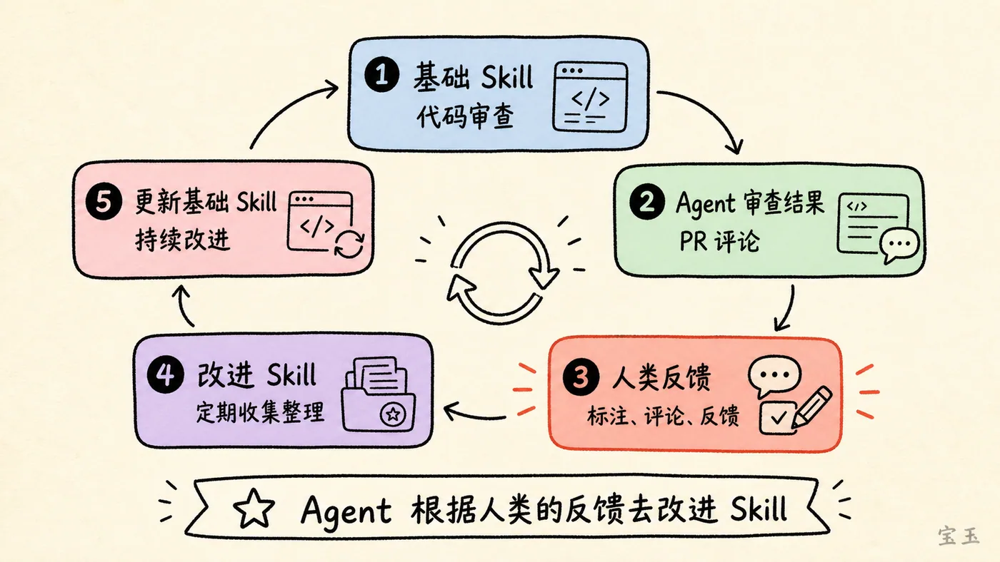

Warp 如何让 Agent 自我进化
Claude 新的一篇博文 《How Warp builds self-improving agents on Claude》，看了后还是挺有收获，它解决的是 Skill 的进化问题。
这个问题我以前也研究过，我写了一个反编译 JS 代码的 Skill（ GitHub ），每次 Agent 反编译的时候遇到新的场景解决了就自己更新自己的 Skill，效果还不错，能一直优化，就是 Skill 文件越来越大。
我还研究过写作的自我进化 Skill，那个就一言难尽，因为它其实没有自己统一的标准，经常负优化，越写越糟糕。
Agent 做 Code Review，缺的不是能力，而是记忆
说回来 Warp 这个，Warp 是一个挺有名的终端工具，内部尝试借助 AI 做 Code Review。一开始让 Agent review 代码，效果并不理想，主要问题体现在 Agent 不了解你的项目，不知道你的团队规范，不知道历史经验教训，就算你指出来问题它下次还记不住。简单来说就是没有记忆。
初期他们采取了很多补救措施：
- 手动根据失败案例改系统提示词
- 完善项目的
AGENTS.md文件（有意思的是这篇文章是 Claude 发的，但是用的是AGENTS.md而不是CLAUDE.md，我记得 Claude 默认不支持AGENTS.md的）
但效果并不理想，一方面它依赖于人主动去做，成本较高；另一方面团队成员在 Code Review 时人工在 PR 写的高质量评论完全没用上。
两个 Skill，加上人类反馈
所以他们搞了个解决方案，一个基础 Skill 负责做代码审查，一个改进 Skill 负责定期收集人类工程师在代码审查时的评论，尤其是对 Agent 审查结果的评论，根据人类工程师的评论去更新代码审查的 Skill。

换句话说，它不是依赖于模型自己去改进自己，而是 Agent 根据人类对模型结果的标注（人类对代码审查的评论），去改进技能。
只不过它把这个事做的摩擦力极低，不需要人手工去收集整理评论，不需要填写调查问卷，人只要自然地去代码下写评论，后面的事情都是 Agent 自动完成。
这可能正是 Agent 的最佳实践方案之一：人负责高维度的标注、评论、反馈这些事情，Agent 去做执行的工作，Agent 根据人类的反馈去改进 Skill。
Warp 总结的 6 条最佳实践
除此之外，他们还总结了一些最佳实践：
1. 写原则，不要写死规则
编写 Skill 时，要像在指导一个聪明人，而不是在给计算机编程。在 Skill 中写“寻找重复代码”，比列出详尽的变量命名规则更有效。
2. 解释为什么
说明规则背后的理由，能让智能体针对问题进行推理，而不是机械执行僵化指令，也因此更容易举一反三。
3. 让反馈没有摩擦、毫不费力
在人们原本工作的地方收集反馈，例如直接评论 PR 或 issue。同时让收集过程自动发生，不要增加额外的提交步骤。低摩擦才能让信号持续流动。如果反馈太麻烦，你就收不到反馈，也就无法改进 Skill。
4. 保持 Skill 精简，并使用渐进式披露
优秀的 Skill 文件不会很庞大；它会引用资源文件和脚本，而不是一次性把所有内容都塞进上下文。
5. 反馈质量大于数量，但数量也有帮助
一位资深工程师给出的少量、详细且与领域相关的反馈，可能比大量草率反馈更有价值，因为简单的赞成／反对并不能说明“为什么”。
即使样本量相对较小，只要反馈来自掌握领域知识的人，而且足够详细，你也能得到非常好的信号——这些知识是智能体通过其他方式根本无法获得的。话虽如此，优质信号的语料越多，效果越好。
6. 做好改进 Skill 的 Skill，可以用来改进其他 Skill
把改进 Skill（也就是前面提到的一个代码审查 Skill、一个改进 Skill）做好，收益不只限于眼前这套 Agent 循环，因为改进 Skill 在不同用例之间具有很高的复用性。除了领域专用知识这一部分，它其实是一套相当通用、可复用的机制。代码审查 Agent 的改进 Skill，也可以应用到其他 Skill 的改进上。
如果反馈本身是错的呢？
可能有人会担心：如果反馈本身是错的呢？
Warp 的做法是永远不让 Agent 盲目接受反馈。给它足够的上下文来做基本的合理性检查，限制谁的反馈有权影响技能更新（不是所有人的意见都同等重要），最后始终保留人在循环中审核改动。
对于那些有明确标准答案的领域，比如代码是否通过了测试、部署是否成功，可以先建一个验证基准，让 Agent 自己对着基准跑。没有标准答案的领域，比如代码风格、文档质量，就靠领域专家的判断，不要开放给所有人随意反馈。